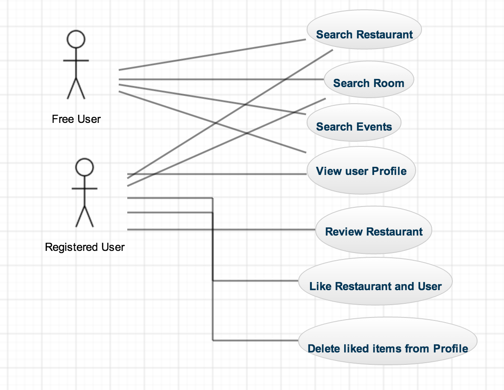

Travel Search
Author
Navneet Verma,Candidate for MS in CS
CCIS,NEU,Boston
verma.n@husky.neu.edu
Abstract
In this report we would discuss about project we developed this semester.I would describe project objectives,requirements analysis,database design and Interface design decisions.Going further ,I would describe the challanges we faced,our Success and failures in terms of requirements we met.Finally, I would describe the learnings and further modifications to the system.
Introduction
This project 'TravelSearch'is a single page application that attempts to help users to find restaurants,short term apartments and events when they are travelling.It also allows user to review and favorite restaurants and other users.User can see the review posted by him,his favorite users and restaurants in his profile and delete them from there if he wants.
Requirements
Functional Requirements
- User Should be able to search Restaurant ,Apartments and events in the city he wants
- All the search results should be visible on google maps
- User should be able to see reviews of selected restaurant and it's menu.if available.
- User should be able to review an restaurant but only after login.
- User should be able to add an restaurant or other users as favorite but only after login.
- User should be able to see his reviews ,favorite restaurants and users in the profile.
- User should be able to see his favorite user's reviews ,favorite restaurants and users through his profile.
- User should be able to see another user's reviews ,favorite restaurants through restaurant details page page
- User should be able to delete his reviews ,favorite restaurants and users through his profile.
- User Should be able to update his profile(Name and Location Only).
Non Functional Requirements
- Multiple users should be able to access data from the app at any point of time.
- Data provided by the app to the users should be correct and checked at regular intervals.
- Application and services provided by it should be available to user at any point of time after the installation.
- Interface of the app should be user centric and design should be minimalistic, avoiding too much of information on one page.
Implementation Details
- Front End:
HTML5,CSS,JavaScript,Angular,jQuery,BootStrap
- Database:
MongoDB
- Web services:
Locu,RoomoRama,Event,GoogleMaps
- Data Representation:
Json
Design
Identifying Classes
- Guest User:Class describing the Guest User and relevant attributes.
- Registered User:Class describing the Guest User.
- Restaurant : Class describing Restaurant and it's attributes
- Room : Class describing Room and it's attributes
- Event : Class describing event and it's attributes
- Review: Class describing review made by user
- Menu: Class describing menu and it's attributes
Relationships
From Table
To Table
Relatiosnhip
Description
User
Restaurant,Room,Event
many to many
A user can search many restaurants.Rooms and events
Registered User
Registered User
1,*
A registered user can add to favorite many registered users
Registered User
Restaurant
Many to many
A registered user can add to favorite many restaurants
Registered User
Review
One to many
A registered users cab write many reviews
Restaurant
Review
One to many
A restaurant can have many reviews
Restaurant
Menu
One to one
A restaurant can have one menu
Use Cases
Actors
- Free User: Access to search related content only.
- Registered User: Access to full content.
Use case Diagram
Requirements Coverage
User Should be able to search Restaurant ,Apartments and events in the city he wants.
User should be able to see reviews,details of selected restaurant and it's menu.if available.
- Restaurant details page show,how manny users have liked it,it shows menu and reviews if available,if not then shows nothing.
User should be able to review an restaurant and add a restaurant and other user as favorite only after login.
- Here I have taken notice that user should not be able to save same restaurant or user as favorite.
- Submit field in login modal and review form are disabled if required fields are not filled.
- The user will be asked to login for the first time when he attempts to post review or attempt to add a restaurant or user to favorite.
User should be able to see his reviews ,favorite restaurants and users in the profile.
- Here I have made facility to visit the restaurant or user profile when you click on the blue link telling their name

User should be able to see his favorite user's reviews ,favorite restaurants and users through his profile.
User should be able to see his other user's reviews ,favorite restaurants and users through restaurant details page.
- When you click on blue link,specifying user email address in review section you will be redirected to user's page.For example,uf we click a@gmail.com as shown in picture given below.
- User should be able to delete his reviews ,favorite restaurants and users through his profile.
- All options work the same as for deleting review,In below example I am attempting to delete review of BlackJack Pastabar,of date 8th december.Once you delete it changes are reflected both in your profile page and restaurant page.
- User Should be able to update his profile(Name and Location Only).
- I have made update modal,similar as login modal,if the field is invalid,the border of textbox is red,else green,button becomes active only if both name and location are entered.On successful update changes are seen in the profile.
By the example explained above,we can assume that all our functional requirements have been met,there are some small errors here and there,but most of the functionality works fine.
As of non functional requirements is concerned,application supports multi user login ,follow minimalist design and can be used at any point of time,hence they are also met.
A few issues in the project:
- Somehow home page is not acting responsive,the bottom content goes beyond div area on smaller screens.
- On home page in google maps,marker widow for restaurant gets closed on click but room's marker window doesn't close or take too long.
Functional Requirements
- User Should be able to search Restaurant ,Apartments and events in the city he wants
- All the search results should be visible on google maps
- User should be able to see reviews of selected restaurant and it's menu.if available.
- User should be able to review an restaurant but only after login.
- User should be able to add an restaurant or other users as favorite but only after login.
- User should be able to see his reviews ,favorite restaurants and users in the profile.
- User should be able to see his favorite user's reviews ,favorite restaurants and users through his profile.
- User should be able to see another user's reviews ,favorite restaurants through restaurant details page page
- User should be able to delete his reviews ,favorite restaurants and users through his profile.
- User Should be able to update his profile(Name and Location Only).
Non Functional Requirements
- Multiple users should be able to access data from the app at any point of time.
- Data provided by the app to the users should be correct and checked at regular intervals.
- Application and services provided by it should be available to user at any point of time after the installation.
- Interface of the app should be user centric and design should be minimalistic, avoiding too much of information on one page.
Identifying Classes
- Guest User:Class describing the Guest User and relevant attributes.
- Registered User:Class describing the Guest User.
- Restaurant : Class describing Restaurant and it's attributes
- Room : Class describing Room and it's attributes
- Event : Class describing event and it's attributes
- Review: Class describing review made by user
- Menu: Class describing menu and it's attributes
Relationships
| From Table | To Table | Relatiosnhip | Description |
| User | Restaurant,Room,Event | many to many | A user can search many restaurants.Rooms and events |
| Registered User | Registered User | 1,* | A registered user can add to favorite many registered users |
| Registered User | Restaurant | Many to many | A registered user can add to favorite many restaurants |
| Registered User | Review | One to many | A registered users cab write many reviews |
| Restaurant | Review | One to many | A restaurant can have many reviews | Restaurant | Menu | One to one | A restaurant can have one menu |
Use Cases
Actors
- Free User: Access to search related content only.
- Registered User: Access to full content.
Use case Diagram

User Should be able to search Restaurant ,Apartments and events in the city he wants.

User should be able to see reviews,details of selected restaurant and it's menu.if available.
- Restaurant details page show,how manny users have liked it,it shows menu and reviews if available,if not then shows nothing.
User should be able to review an restaurant and add a restaurant and other user as favorite only after login.
- Here I have taken notice that user should not be able to save same restaurant or user as favorite.
- Submit field in login modal and review form are disabled if required fields are not filled.
- The user will be asked to login for the first time when he attempts to post review or attempt to add a restaurant or user to favorite.
User should be able to see his reviews ,favorite restaurants and users in the profile.
- Here I have made facility to visit the restaurant or user profile when you click on the blue link telling their name
User should be able to see his favorite user's reviews ,favorite restaurants and users through his profile.
User should be able to see his other user's reviews ,favorite restaurants and users through restaurant details page.
- When you click on blue link,specifying user email address in review section you will be redirected to user's page.For example,uf we click a@gmail.com as shown in picture given below.
- All options work the same as for deleting review,In below example I am attempting to delete review of BlackJack Pastabar,of date 8th december.Once you delete it changes are reflected both in your profile page and restaurant page.
- I have made update modal,similar as login modal,if the field is invalid,the border of textbox is red,else green,button becomes active only if both name and location are entered.On successful update changes are seen in the profile.